시연평가용 AI 플랫폼에 접속하기 위한 URL과 계정 정보입니다.
| 항목 | 정보 |
|---|---|
| 시연 URL | https://7rzubyo9fsfmco-3000.proxy.runpod.net/ |
| 권장 브라우저 | Chrome, Edge (최신 버전) |
| 시스템 상태 | 24시간 가용 (평가 기간 상시 운영) |
| 계정 ID | 비밀번호 | 권한 | 접근 가능 기능 |
|---|---|---|---|
KGT-G01 |
gggg |
admin | 전체 기능 (채팅, 문서관리, 관리자설정, 모니터링, RAG품질) |
KGT-G02 |
gggg |
admin | 전체 기능 |
KGT-G03 |
gggg |
admin | 전체 기능 |
KGT-G04 |
gggg |
admin | 전체 기능 |
KGT-G05 |
gggg |
admin | 전체 기능 |
KGT-G06 |
gggg |
admin | 전체 기능 |
KGT-G07 |
gggg |
admin | 전체 기능 |
KGT-G08 |
gggg |
manager | 채팅, 문서관리, 모니터링 (관리자 설정 일부 제한) |
KGT-G09 |
gggg |
user | 채팅 전용 |
KGT-G10 |
gggg |
viewer | 읽기 전용 (채팅 이력 조회만) |
KGT-G01)gggg)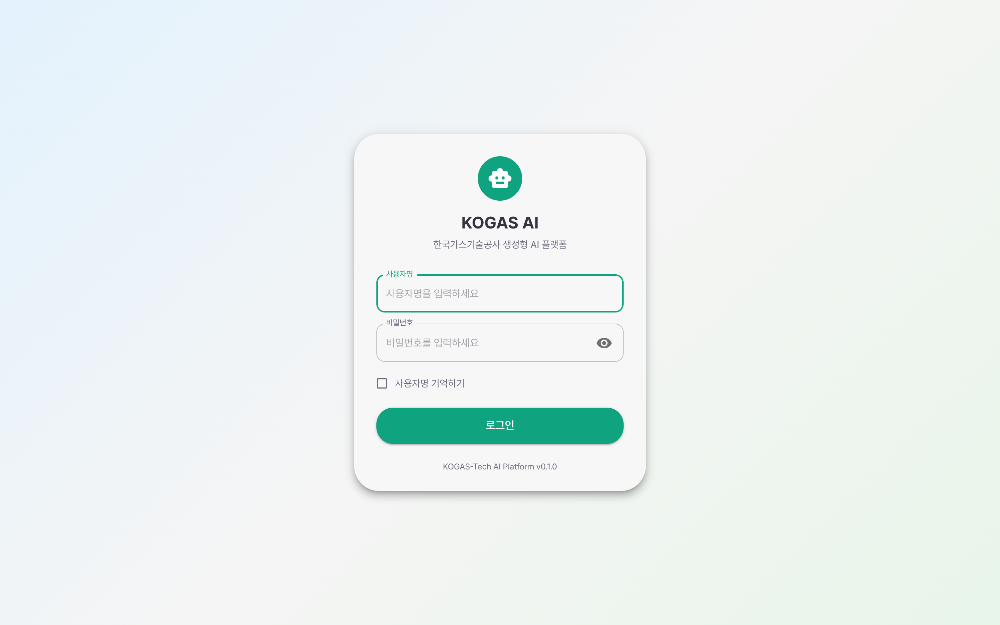
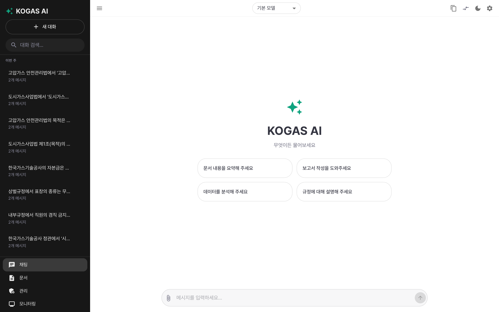
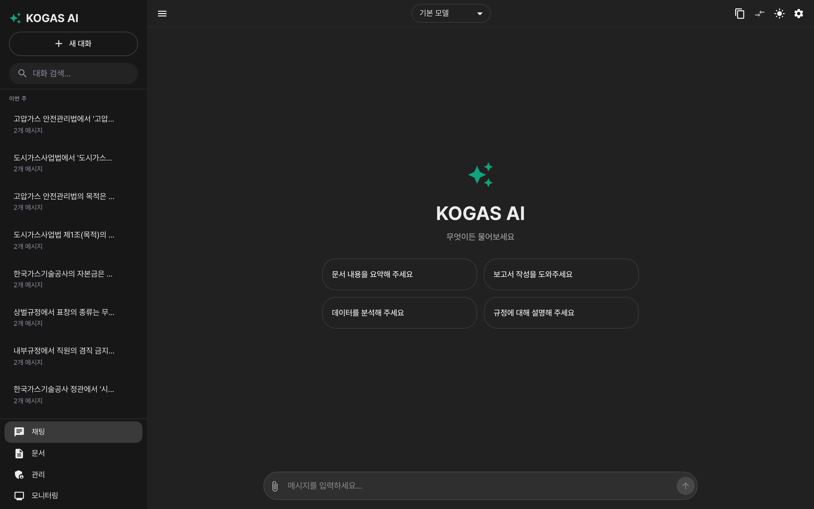
LLM과 RAG 성능을 직접 평가할 수 있는 핵심 기능입니다.
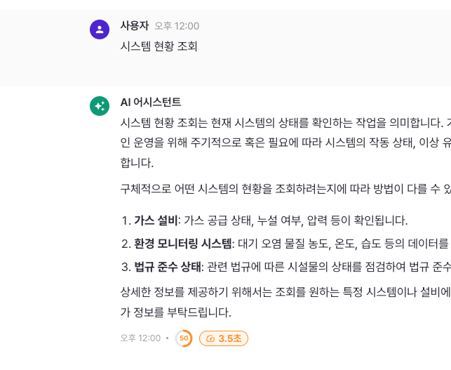
문서 업로드 및 인제스트 현황을 확인할 수 있습니다.
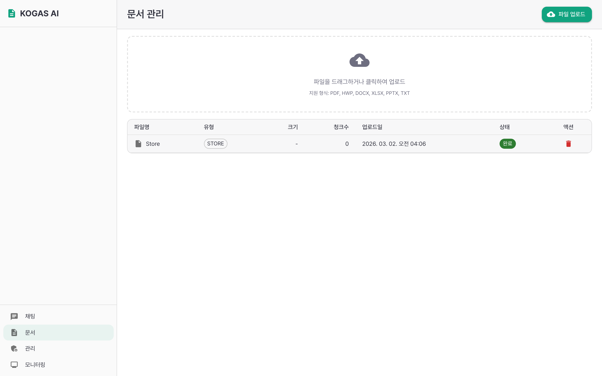
Upstage Document Parse 기반 한국어 문서 OCR 기능입니다.
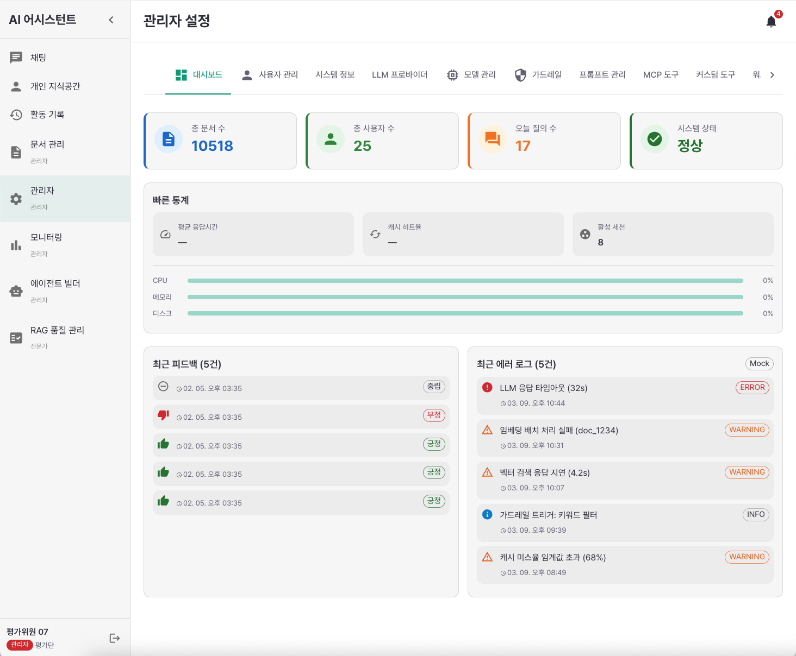
React Flow 기반 비주얼 캔버스로 워크플로를 설계하고 실행합니다.
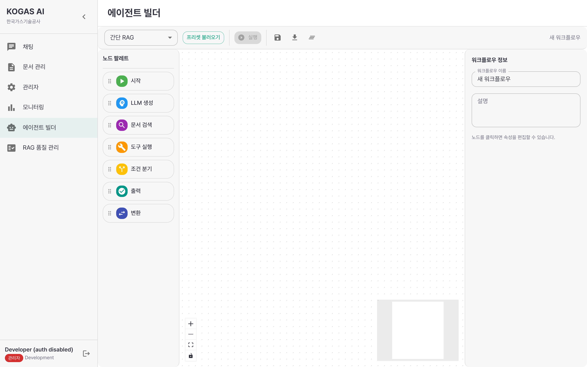
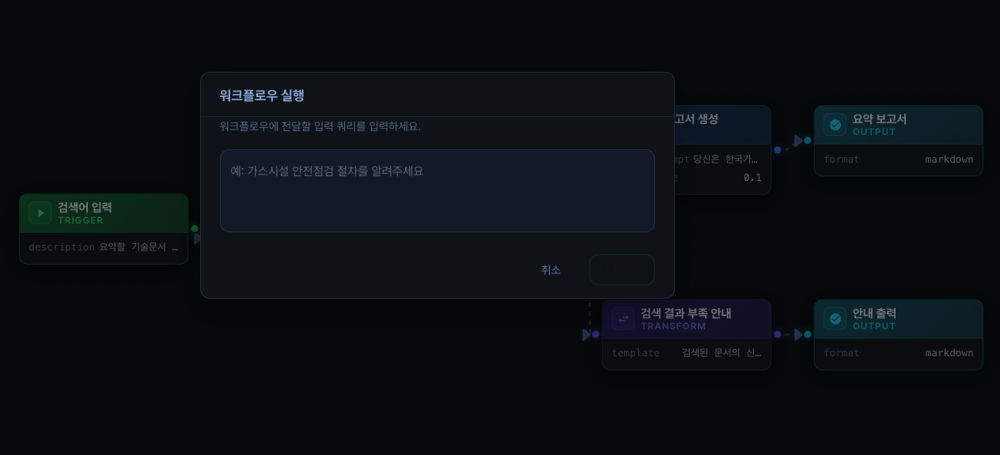
운영 현황 및 RAG 품질 지표를 대시보드에서 확인합니다.
총 질문 수, 평균 응답 시간, 신뢰도 분포 (높음/중간/낮음) 비율, 사용 통계 Excel 내보내기
청크 길이 분포, 중복 탐지, 의미 완결성 분석, 임베딩 추적 (인제스트 작업별 상태)
사용자 좋아요/싫어요 데이터 집계, 코멘트 조회, 개선 사항 추적
사용자별 쿼리 이력, 접속 로그, 이상 패턴 탐지 현황
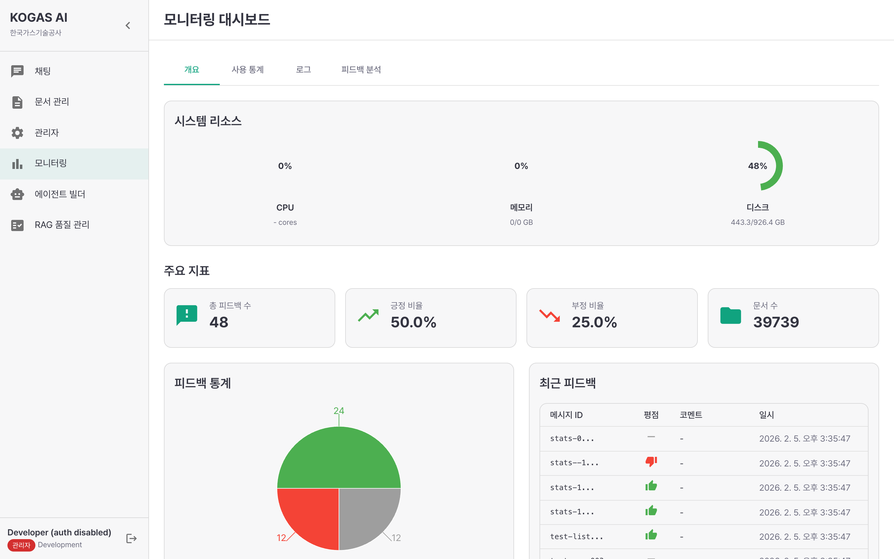
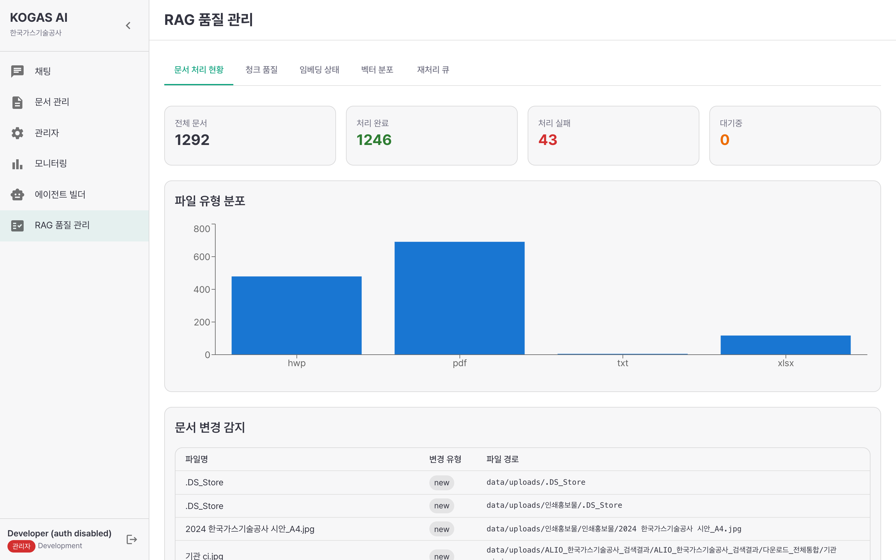
아래 질문들은 RAG 시스템의 성능을 다양한 유형으로 평가할 수 있도록 선별된 예시입니다. 채팅창에 직접 입력하여 테스트하세요.
| 평가 영역 | 벤치마크 결과 | 평가 방법 |
|---|---|---|
| LLM / RAG | 60문항 기준 Run 5 100% (92.3% 객관 기준) | 채팅에서 질문 입력 후 정답 여부 판단 |
| OCR | 한국어 문서 특화 (Upstage Document Parse) | 관리자 OCR 탭에서 문서 업로드 후 텍스트 추출 품질 평가 |
| 에이전트 빌더 | 프리셋 워크플로 5개 제공 | 에이전트 빌더에서 워크플로 실행 후 결과 확인 |
| 항목 | 사양 |
|---|---|
| LLM 모델 | Qwen2.5-32B-Instruct-AWQ (vLLM 서빙, A100 SXM 80GB) |
| 임베딩 모델 | BAAI/bge-m3 (1024 차원) |
| 벡터DB | Milvus 2.6 Lite |
| 검색 방식 | 하이브리드 (Dense Vector + BM25 Sparse) |
| 리랭커 | bge-reranker-v2-m3 (설정 기반 ON/OFF) |
| 컨텍스트 | 최대 16,384 토큰 (A100 기준) |
| 인제스트 데이터 | RAG평가용 문서 92개 파일, 10,518 청크 |
| 평가 데이터셋 | 60문항 (factual, inference, multi-hop, negative) |
| 백엔드 프레임워크 | Python FastAPI, AsyncIO |
| 프론트엔드 | React 19, TypeScript 5.9, MUI v7, Vite 7 |
| OCR 엔진 | Upstage Document Parse (Cloud API) |
| 인증 | JWT + RBAC (4개 권한 등급) |
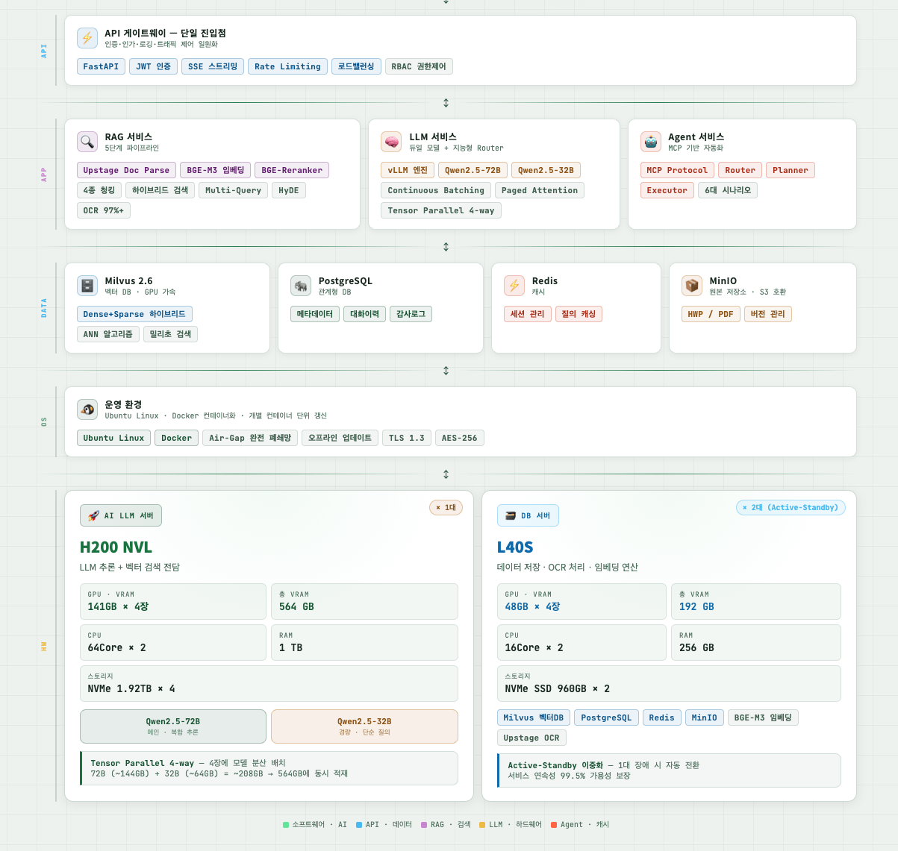
시연이 완료된 후 아래 항목을 확인하세요.
시연 완료 서명 (선택)
본 접속 매뉴얼은 시연평가를 위한 가이드 문서입니다. | 한국가스기술공사 생성형 AI 플랫폼 구축 사업 | 2026년 3월